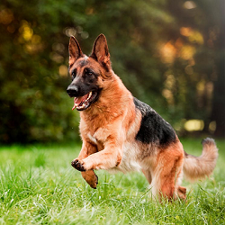
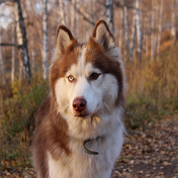
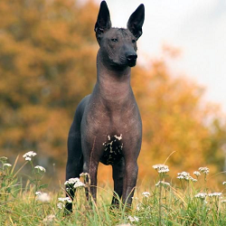

Novedades
Ver masAccesorios
Ver masCada raza es única y también lo son sus necesidades de salud. Obtené consejos e información sobre la raza adecuada para vos y la nutrición adecuada para tu mascota.
Destacados

Pastor aleman
El Pastor alemán, siempre en boga, listo y fácil de adiestrar,
es bastante activo y disfruta cuando tiene algo que hacer. Por
ello,
necesitan realizar gran cantidad de ejercicio a diario; de lo
contrario, se vuelven nerviosos o muy excitables.

Husky rojo
Los clásicos perros del norte, son simpáticos e inteligentes,
aunque algo independientes y tozudos.
Se sienten realizados con la compañía de las personas, aunque
necesitan un adiestramiento sólido y moderado desde que son
cachorros.

Xoloitzcuintle
Estas mascotas sin pelo destacan por su inteligencia y facilidad
de aprendizaje, y al mismo tiempo también por su alta fidelidad.
Ejerce como guardián y protector, si bien también son conocidos
por su carácter inquieto y amigable, pero sobre todo por su gran
nobleza.
Alimentacion unica para cada mascota
Creamos una nutrición específica que ayuda a los perros a vivir de la forma más saludable.
Independientemente de que el perro sea un atleta serio, un profesional que trabaja o que esté activo todos los días, el estado físico, la nutrición y el entorno influirán en la salud y el rendimiento durante toda su vida.En la naturaleza un perro se alimenta fundamentalmente de carne, es su mayor fuente de energía y de aportación de proteínas. Pero también complementa este alimento con frutas, hortalizas o pescado. Aunque hablamos de un animal cazador, el perro no tiene problema a la hora de comer comida encontrada por azar en su camino. Un perro de compañía, de trabajo o de casa tiene las mismas necesidades nutritivas que un perro silvestre o salvaje y por ese motivo debemos buscar la dieta más equilibrada para cubrirlas, para evitar carencias que pueden desembocar en problemas de salud, de pelaje, de alergias, etc.